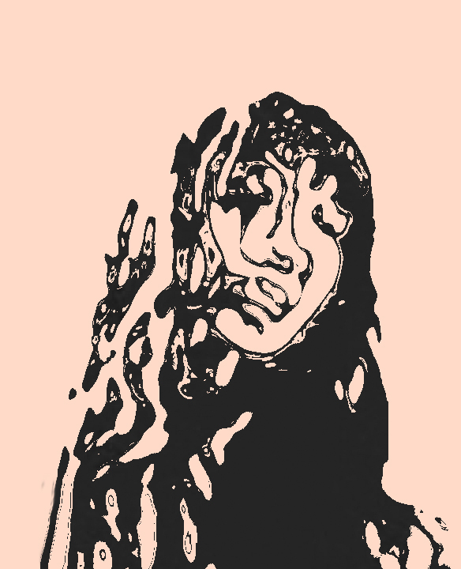

Histoire & Colorimétrie


PROJET APACHES
Les Indiens d'Amérique en couleurs
Photographie issues des archives digitales de la librairie de New-York, des images libres de droits et originellement en Noir et Blanc datant du début du XXe siècle (environ 1900-1910).
Piquée par la curiosité de connaître le rendu des photographies en couleurs, j'ai utilisé la technique de l'autochrome sur Photoshop.
Un procédé de restitution photographique des couleurs des frères Auguste et Louis Lumière breveté en 1903.
En appliquant successivement des filtres rouge, bleu et vert,on se rapproche de la couleur originale de la photographie.
En partant du principe, qu'une photographie en Noir et blanc suffit à observer les lumières (tous ce qui est représentée en blanc) et les ombres ( tous ce qui est représenté par des dégradés allant du gris clair au noir), et que par l'addition de ces éléments, nous pouvons distinguer un objet dans l'espace.
En ajoutant, les trois couleurs primaires : rouge, bleu et vert, on distingue la couleur car elle se compose de ces trois couleurs, sachant que l'absence de couleur est le blanc, tandis que le noir représente l'absorption de ces 3 couleurs. En additionnant les filtres RVB les uns sur les autres, et en jouant sur les niveaux de chacun, par magie, la photographie se colorise peu à peu, et les élements qui peinaient à être visibles en noir et blanc, se dévoilent en couleurs.
« En quelque sorte, on apporte un nouveau regard rafraîchi sur l'Histoire. Ce n'est pas un substitut à l'Histoire.
Nous n'étions pas là, on ne peut pas savoir avec précision les couleurs de la photo lorsqu'elle a été prise. Je construis une image qui montre à quoi cela aurait pu peut-être ressembler : c'est un ajout, rien de plus. »

retour
projet etude de la forme
Etude de la forme
La déstructuration de l'image est volontaire. L'objectif de ces réalisations est de comprendre la relation lumière-ombre. En premier lieu, l'idée est de reprendre une image puis de la convertir en noir et blanc afin de conserver les ombres et les points de lumières.
La suite étant d'appliquer une nouvelle texture à la forme obtenue par écrêtage, et de transformer les traits. Peu à peu, on reconstitue une image.
retour
PROJET Mate painting
"Construire une image


Ici, il est question de montrer l'interêt du surréalisme : pouvoir exprimer une émotion par les images, faire ressentir de l'émotion à un une personne.
retour

{kind=link}
{kind=link}
{kind=link}
{kind=link}
{kind=link}
{kind=link}
{kind=link}
Ici, il est question de montrer l'interêt de la création et le pouvoir du dessin : pouvoir exprimer une émotion par les images, faire ressentir de l'émotion à un une personne.
retour